むちゃくちゃ基礎
バニラとの主な違い
TFCには重力の概念があり、土・砂利・丸石ブロックなど一部のブロックは縦に積み上げることができない。
温度や雨量の概念があり、植生や地質に影響する
農業・畜産でなかなか成長しない
鉱石はまばらに広がっているのではなく特定の地層・深度にまとまって鉱脈で存在する
チュートリアル
石器時代の序盤
小石を拾う(どの岩でもOK)
(堆積岩・火山岩などで耐久が変わる)
金属の小片[Metal Nugget]を拾う
地面を構成する地質 によって生成される金属が決まる。
足元の一定の深さまでに存在する鉱物 が地表に小片となって落ちている。
以下のいずれかの合金を目指し確保しておくこと。（鉄などは拾わずに放置しておいたほうが後々役立つ）
蒼青銅[Bismuth Bronze]・・・銅[Copper]、蒼鉛[Bismuth]、亜鉛[Zinc]の合金
青銅[Bronze]・・・銅、錫[Tin]の合金
黒青銅[Black Bronze]・・・銅、金[Gold]、銀[Silver]の合金
錫・金・銀がある地層は意外と探すのが大変なので蒼青銅を目指すのが一般的
枝を拾う(どの木でもOK)
石のオノ…丸太の入手
石のシャベル…粘土の入手
石のナイフ…藁の入手(草をナイフで破壊して入手)
粘土を掘る
(特徴的な草(キリン草、？？？)の下に生える)
土をたたくとグレーっぽいパーティクルがでる
小さなツボ
大きなツボ
大きなツボに蓋をして運ぶと体力の消費が激しいので使わない選択肢もある
粘土ブロックにしてもさほど効率はよくないのでそのまま1～2スタック運ぶ
石器時代
タンニンになる木を1スタックほど確保しておく
→タンニンになる木の一覧
カオリン粘土が存在する熱帯地域にはあまり存在しない気がする
窯焼きで小さなツボを作る
陶芸で小さなツボなどを作る
1マス地面を掘り下げ、Vボタンで焼きたいものを置く(最大4個まで)
藁を右クリックで8個置く（押しっぱなしでOK）
丸太を右クリックで8個置く
火きり棒[Firestarter]をShiftを押しながら右クリックし火をつける
棒2個でクラフト
6分40秒ほどで完成するが、熱いのですぐには使用できない
食料確保
野菜・動物・魚などから食材を確保する。果物は特定の季節にしか実らない。
食べ物には腐敗度が設定されており、腐敗が早いものと遅いものがある。
空腹ゲージがなくなると体力が減るようになる
水分ゲージがなくなると走れなくなる
海水を飲むと渇き状態[Thirsty]になりむしろ水分ゲージの減りが早くなる
トマト・果物など一部の食べ物は水分ゲージも一緒に回復する
栄養素の摂取量で体力が決まる
穀物[Grain]
果物[Fruit]
野菜[Vegetable]
肉類[Protein]
乳製品[Dairy]
同じ食べ物を連続して食べても栄養素が増えないとどっかで見たような・・・
↑たぶん、これは乳製品の説明。食べ物→牛乳→食べ物...と交互にしないと栄養にならないらしい。
However, it only adds to nutrition when drank after eating a food. Practically, this means that drinking milk twice in a row is ineffectual. A meal must precede it.
満腹度[Saturation]も存在する
小さなツボで保管することで少し腐敗を遅らせることができる
ついでに暑さに強い(MAX35℃以上)穀物・植物の種をそれぞれ1～2種類確保しておく。→植物のデータ
なお、植物の成長は時間かかるので最序盤育てないほうがよい
(カオリン粘土を求めて赤道付近へ大移動する方が効率的)
たき火[Firepit]で松明[Torch]と焼き料理を作る
火きり棒[Firestarter]…棒2個でクラフト
棒3個
丸太1個
焚き付け[Kindling]
5つまで使用でき、1個につき10%成功率が上がる
紙製品[Paper Product]
藁[Straw]
松ぼっくり[Pinecone]
たき火の作り方
棒3個、丸太1個、必要に応じて焚き付けを地面の同じ場所に投げ捨てる
火きり棒を持ちShiftを押しながら？右クリックを長押しする
成功すると火が出て専用UIが開けるようになる
雨が当たっているところではなかなか火が起こせない
左上のスロットには丸太を4個まで置ける
泥炭[Peat]も使用できる水辺に固まって見つかることがある（雨量が多い場所にしか存在しない？）
真ん中上のスロットに焼きたいものを置く
一定の温度に達するとその下のスロットに焼けたものが吐き出される
棒を焼くと松明ができる
生の肉・魚・ジャガイモなどを焼くと栄養素が増える
カオリン粘土が存在する地方へ移動しながら青銅系のどれかを狙う
蒼青銅[Bismuth Bronze]
銅、蒼鉛、亜鉛
青銅[Bronze]
銅、錫
黒青銅[Black Bronze]
銅、金、銀
基本的には蒼青銅を狙うことになる
↑山の地帯だとY80以上のところで錫が出るので青銅もよさそう
↑錫の小片は錫を含んだ砂利が川で見つかれば比較的手に入る →砂金取り
銅の小片を拾いながら露出した銅鉱脈を見つけたら銅のツルハシを作る
つるはしの型とノコギリの型を作る→陶芸
型と小さなツボに銅の小片[Nugget]を入れたものを窯焼きする
小片は10Unit。ツールは100Unitで作成できる
溶けた銅が入ったツボを右クリックし、型をスロットにセットする
銅が固まったら各ツールのヘッドが取り出せる（型は壊れる）
最悪、つるはしさえあれば露出した銅鉱脈や露天掘りで銅を集められる。
梁があったほうが安定するのでノコギリもあったほうがよい→梁
銅器・銅合金時代
石の金床[Anvil]を作成できる石と溶剤[Flux]を作成できる石を探しておく
→鉱物 →石の金床と溶剤 石ブロックの周囲6マスを破壊すると持ち運べる
・地中深くを掘ればたいてい石の金床にできる岩がある
・地表の小石で地中の変成岩が特定できるのでFluxはだいたい近場で確保できる
錬鉄時代
鋼鉄時代
レッドスティール・ブルースティール
合金の概要
TFCでは金属を溶かして合金を作ることができる。
金属を含む鉱石のほか、ツール（消耗していても可）なども合金の材料にできる。
大きさによっては溶かす容器に入れられないので注意。
合金の作成方法
窯焼き
小さなツボに金属を入れ、窯焼きして合金を作る
るつぼ[Crucible]
専用UIで合金を作る。
例: 黒鋼は鋼鉄、ニッケル、黒青銅で作成するが、
銅、金、銀を溶かし黒青銅の割合になった金属に鋼鉄とニッケルを混ぜても失敗する。
合金の成分構成
合金名
材料
割合
蒼青銅[Bismuth Bronze]
Copper
50 ～ 65%
青銅[Bronze]
Copper
88% ～ 92%
黒青銅[Black Bronze]
Copper
50% ～ 70%
黄銅[Brass]
Copper
88% ～ 92%
スターリングシルバー
Copper
20% ～ 40%
ローズゴールド[Rose Gold]
Copper
15% ～ 30%
黒鋼[Black Steel]
Steel
50% ～ 70%
青鋼[Blue Steel]
Black Steel
50% ～ 55%
赤鋼[Red Steel]
BlackSteel
50% ～ 55%
ステンレス鋼
Steel
60% ～ 80%
大きさ[Size]と重さ[Weight]の概要
TFCの世界ではアイテムに大きさと重さが設定されている。
サイズ(Size)
収納できる容器
Tiny
◎ 何にでも入る
Very Small
◎ 何にでも入る
Small
○ 小さい壺
Normal
× 小さい壺
Large
× 小さい壺
Very Large
× 小さい壺
Huge
容器には入れられない。
重さ[Weight]
スタック数
Very Light
64
Light
32
Medium
16
Heavy
4
Very Heavy
1
金床[Anvil]、密封した樽[Sealed Barrel]、中身の入っているるつぼ[Crucible]を持つと過積載状態[Overburdening]になる。
HugeかつVery Heavyのアイテムを2つ以上持つと動きが極端に遅くなる。
馬にも過積載状態はあるので注意。
石器製作[Knapping]
小石[Rock]を2つ以上持っている状態で右クリックすると専用のUIが開き石器製作ができる。
石器製作と関係ないが、小石は右クリックで地面に設置でき、3つまで重ねることができる。
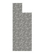
ナイフ[Knife]
草から藁を入手。穀物からもみ殻を取る。
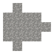
オノ[Axe]
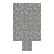
シャベル[Shovel]
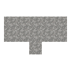
ハンマー[Hammer]
石ブロックを石の金床にする
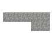
クワ[Hoe]
耕した土の状態がわかる。
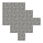
ジャベリン[Javelin]
投げられる
陶器[Pottary]の概要と必要素材
粘土[Clay]を使用し、陶器を作ることができる。
粘土は雨量175mm以上のあらゆるところで固まって存在し、粘土の上には特定の植物が生えている。
(Antyrium Fern, Canna, Goldenrod, Pampas Grass, Perovskia, WaterCannna)
陶芸
粘土を5つ持ち石器製作のように右クリックをして専用UIを開き、粘土の形をつくる。
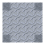
小さなツボ[Small Vessel]
小さなものを4スタック
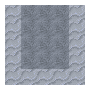
大きなツボ[Large Vessel]
設置して使用。9スタック。蓋をして持ち運べる。
陶器の水筒[Ceramic Jug]
水を100mb汲み持ち運べる。
インゴット鋳型[Ingot Mold]
溶けた金属を流し込みインゴットを作る
ノミの鋳型
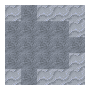
オノの鋳型
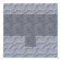
ハンマーの鋳型
クワの鋳型
ナイフの鋳型
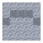
ツルハシの鋳型
ノコギリの鋳型
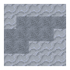
カマの鋳型
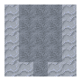
シャベルの鋳型
たき火[Fire Pit]の概要と必要素材
鍋料理
小さい壺[Small Vessel]の概要と必要素材
サイズSmall以下のアイテムを16個4スタックしまえる。
地質・地層[Geology]
地質には大きく分けて4種類存在し、それぞれ含む鉱物が異なる。
地質カテゴリー
地質名
堆積岩層[Sedimentary]
Shale, Claystone, Limestone, Conglomerate, Dolomite, Chert, Chalk
変成岩層[Metamorphic]
Quartzite, Slate, Phyllite, Schist, Gneiss, Marble
火山岩[Igneous Extrusive]
Rhyolite, Basalt, Andesite, Dacite
深成岩[Igneous Intrusive]
Granite, Diorite, Gabbro
下層[Underneath]の概要
特定の地層の下層には特定の地層がある。
カテゴリー
火山岩[Igneous Extrusive]
深成岩[Igneous Intrusive]
珪長質岩[Felsic]
Rhyolite
Granite
中間質岩[Intermediate]
Andesite, Dacite
Diorite
苦鉄質岩[Mafic]
Basalt
Gabbro
海底は火山岩。
地表は基本的に堆積岩[Sedimentary]か火山岩[Igneous Extrusive]のどちらかが存在している。
地中には変成岩・深成岩が存在する。
山岳地帯では変成岩や深成岩が露出していることもある。そこではその地域で見られない堆積岩や変成岩が見つけられることもある？
Uplift rocks can be found above other continental sedimentary or higher-grade metamorphic rocks.
上部
下部(変成岩など)
Shale
Slate
Claystone
Slate
Conglomerate
Slate
Limestone
Marble
Dolomite
Marble
Chalk
Marble
Quartzite
Chert
Phyllite
Slate
Schist
Phylliteか深成岩[Igneous Intrusive]
Gneiss
Phylliteか深成岩[Igneous Intrusive]
石の金床[Stone Anvil]と溶剤[Flux]
銅のツールを作るには銅の金床が必要だが、銅の金床には銅のダブルインゴットが必要。
銅のダブルインゴットはTier0以上の金床(石の金床)が必要。
名称
備考
石の金床[Stone Anvil]
Tier0。銅インゴットの溶接にのみ使用する。Igneous ExtrusiveかIgneous Intrusive。Granite, Diorite, Gabbro, Rhyolite, Basalt, Andesite, Dacite
溶剤[Flux]
Limestone, Dolomite, Chalkをハンマーで砕いて作成。ホウ砂[Borax]を石臼で挽くか, 甲羅[Scute], 二枚貝[Clam], カタツムリ[Mollusk]、ザリガニ[Shellfish]でも作れる。
鉱石・鉱物[Ores and Minerals]
鉱石・鉱物名
種類
見つかる地層
カオリン石[Kaolinite]
Kaolinite
黒鉛[Graphite]
Graphite
自然銅[Native Copper]
Copper
Y40以上の火山岩地層[Igneous Extrusive]、川で沈殿物[Deposits]が見つかることもある。
孔雀石[Malachite]
Copper
主にMarble, Limestone, Chalk, Dolomiteで見つかる(Fluxが作れる地質だけ？)。深いほど鉱脈が大きくなる。
四面銅鉱[Tetraheadrite]
Copper
変成岩地層[Metamorphic]のどの深度でも見つかる。深いほど鉱脈が大きくなる。
閃亜鉛鉱[Sphalerite]
Zinc
火山岩地層の地表付近で見つかる。深いほど鉱脈が大きくなる。
蒼鉛鉱[Bismuthinite]
Bismuth
堆積岩地層[Sedimentary]の地表と深成岩地層[Igneous Intrusive]の深層に存在する。深いほど鉱脈が大きくなる。
自然金[Native Gold]
Gold
火山岩地層・深成岩地層の70≧Yで見つかる。川で沈殿物[Deposits]が見つかることもある。深いほど鉱脈が大きくなる。
自然銀[Native Silver]
Silver
高低差が激しい地域のGraniteとDioriteのY≧90以上で小さな鉱脈が見つかる。あるいはGranite, Diorite, Schist, Gneissの20≧Yでも見つかる。川で沈殿物[Deposits]が見つかることもある。
磁鉄鉱[Magnetite]
Cast Iron
堆積岩地層の地表付近で見つかる。
赤鉄鉱[Hematite]
Cast Iron
火山岩地層の地表付近で見つかる。
錫石[Cassiterite]
Tin
高低差が激しい地域の深成岩地層のY≧80かdikes(?)で見つかる。川で沈殿物[Deposits]が見つかることもある。
珪ニッケル鉱[Garnierite]
Nickel
Gabbroの0≧Yで見つかり、その他の深成岩地層でも小さい鉱脈なら見つかる。
瀝青炭[Bituminous Coal]
Coal+
堆積岩地層の地表付近で平たく広がって見つかる。Whiteまで熱が出る。
褐炭[Lignite]
Coal-
堆積岩地層の地表付近で平たく広がって見つかる。Yellow-Whiteまで熱が出る。
辰砂[Cinnabar]
Redstone
Quartzite, Granite, Phyllite, Schistの深いところで見つかる。石臼で挽いて粉にする。
氷晶石[Cryolite]
Redstone
Granite, Dioriteの深いところで見つかる。石臼で挽いて粉にする。
硝石[Saltpeter]
Saltpeter
硝酸カリウム。堆積岩地層の地表付近で平たく広がって見つかる。石臼で挽いて粉にする。
カリ岩塩[Sylvite]
Sylvite
塩化カリウム。Shale, Claystone, Chertの地表付近で平たく広がって見つかる。石臼で挽いて粉にする。
ホウ砂[Borax]
Borax
Claystone, Limestone, Shaleの地表付近で平たく広がって見つかる。石臼で挽いてFluxにする。
石膏[Gypsum]
Gypsum
堆積岩地層の地表付近で平たく広がって見つかる。
岩塩[Halite]
Halite
堆積岩地層の地表付近で平たく広がって見つかる。石臼で挽いて塩にする。
硫黄[Sulfur]
Sulfur
変成岩地層、深成岩地層の深くの溶岩の周りで見つかる。
ラピスラズリ[LapisLazli]
LapisLazli
Limestone, MarbleのY-20～80の間で見つかる。
エメラルド[Emerald]
Emerald
深成岩地層に柱のように縦に細長く存在している。
キンバーライト[Kimberlite]
Diamond
Gabbroに柱のように縦に細長く存在している。
アメジスト[Amethyst]
Amethyst
堆積岩地層、変成岩地層の川付近でY≧40のところで見つかる。
オパール[Opal]
Opal
堆積岩地層、火山岩馳走の川付近でY≧40のところで見つかる。
植物(野生種)[Wild Crop]の概要と必要素材
世界中を歩くと様々な野生の植物が小さな群生を作って存在している。
それらから種を採取して、農耕を行うことができる。
植物を採取するには素手やナイフで破壊し、その際にいくつかの成果物と種を得ることができる。
農耕[Farming]の概要と必要素材
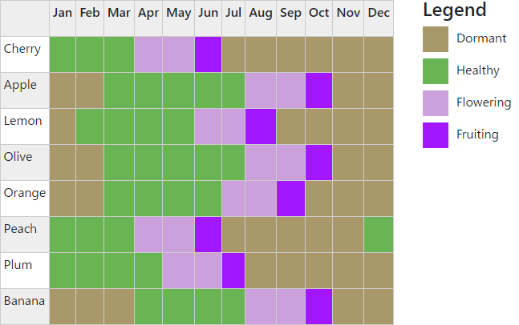
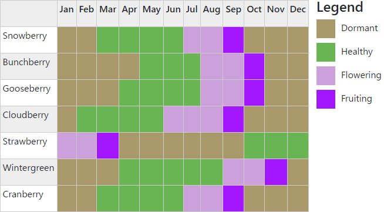
炉[Charcoal Forge]の概要
金属を温めたりするために使う
必要材料:
木炭 7～8個
8個だと作成と同時に火が付く・・・？未検証
石・丸石ブロック 5個
作成方法:
上面以外の5面を石ブロックにしてその中に木炭を右クリックで7層積む
火きり棒で火をつける
塊鉄炉[Bloomery]の概要と必要素材
鉄鉱石（磁鉄鉱、褐鉄鉱、赤鉄鉱）と石炭からまず鋳鉄[Cast Iron]を作る。
Cast Ironはツールに使えない。100UnitのCast Iron材料として使用はできる。
錬鉄の製品は再び溶かすと錬鉄ではなく鋳鉄になる。
塊鉄炉では鉄鉱石だけではなくインゴットやシャベルなどのツールも材料として使用できる。
必要材料:
青銅系のダブルシート…8個
Bronze
Bismuth Bronze
Black Bronze のいずれか
石ブロック
作成方法:
最下段に3x3の石を設置
2段目の手前の左右に石を配置、真ん中に仮ブロックを配置
3段目～5段目は十字の真ん中以外に配置し煙突を作成
仮ブロックの場所に塊鉄炉を配置
使用法:
ハシゴなどでてっぺんに上る
鉄鉱石、インゴット、鉄製品などを煙突に投げ入れる
適切な割合で木炭(石炭は不可)などを煙突に投げ入れる
100mbのCast Ironを作成するのに木炭2つ消費する
塊鉄炉の扉を閉めて(開いててもOK?)火をつける
SHIFTを押しながら火をつける
扉を開けたまま火をつけたら勝手にしまった
2分30秒で焼結鉱[Raw Iron Bloom]が何層かできる
精錬方法:
青銅以上のTierの金床で焼結鉱を精錬された焼結鉱[Refined Iron Bloom]にする
もう一度精錬すると錬鉄[Wrought Iron Bloom]になる
るつぼ[Crucible]の作成と概要
るつぼの中で合金を作ることができる。
最大4,000mb
合金を材料とする合金の場合、一度合金を取り出してインゴットなどに加工してから使用しないとUnknown Metalになる。
ツボに材料を入れ、そのツボをスロットに置くと中身が溶け出す。
ただし、中身が多いと熱が入る速度が遅くなる
必要材料:
耐火粘土[Fire Clay]
粘土
Bismuth Bronze
Black Bronze のいずれか
石ブロック
作成方法:
最下段に3x3の石を設置
2段目の手前の左右に石を配置、真ん中に仮ブロックを配置
3段目～5段目は十字の真ん中以外に配置し煙突を作成
仮ブロックの場所に塊鉄炉を配置
高炉[Blast Furnace]
鋼鉄[Steel]を作るのに使う。
必要材料:
鉄のシート[Iron Sheet] 8個
あくまで高炉を作るのに必要な数で、別途最低12個必要
煙突を最大限設置するには60個必要になる(12個x5層)
るつぼ[Crucible]
作成のほかにもう一つ受け皿として必要になる
耐火レンガ[Fire Brick] 4～20個
羽口[Tuyere]
UIで羽口を設置しないとふいごが動かない
ふいご[Bellow]
作成方法:
炉の上にるつぼを設置
るつぼの上に高炉を設置
高炉の横にふいごを設置（向きに気を付ける）
高炉の上に仮ブロックを設置し、四方に耐火レンガを設置
耐火レンガの外側にSHIFTを押しながら右クリックで鉄のシートを貼り付ける
耐火レンガの煙突1層につき4つのアイテムを保持でき、最大5層まで設置可能
使用法:
屋根の上に登り、鉄鉱石と同数の溶剤[Flux]を投入する
鋳鉄になるようなアイテムならなんでもOK
投入したもののUnitでかなり溶けやすさが違う
木炭も投入する。
鉄や木炭はあえて多めに投入しておくことで消費後にすぐ補充される
（多すぎると時間で消えるので注意）
火きり棒や着火器具[Flint And Steel]で高炉に火をつける
タル[Barrel]の概要と必要素材
液体を8000mb保持する。中央のスロットにはアイテムを置ける。
左上のスロットにバケツや水筒を置いて水を補充することもできる。
空の容器を置けば逆に水を入れることもできる。
バケツなどで直接タルに右クリックしても同じことができる。
タルは蓋をすることができ、蓋をした状態だと液体が入ったまま持ち運ぶことができる。
また、タルに蓋をした状態で作成できるアイテムもある。
シフトを押しながらタルに右クリックすることでも蓋をすることができる。
空のバケツで川・池・海などの水源をクリックして液体を入れられる
蓋を開けたタルは雨・溶け始めているつららで少しずつ水がたまる
蓋を占めるときに中央のスロット以外に存在するアイテムを吐き出す
真水[Water]で作るアイテム:
石灰水[Slaked Lime]… 溶剤[Flux] 000mb/個
革・モルタルなどの作成に使用
タンニン[Tannin]… 特定の原木[xxx Log] 1000mb/個
Oak
Squoia
Birch
Chestnut
Douglas Fir
Hickory
Maple
酒[Alcohol drink]… 特定の穀物[Grains] 500mb/個
入れる材料によって完成品が変わる
酢[Vinegar]…果物[Fluits] 500mb/個
麻の糸[Jute Fiber]… 黄麻[Jute]
麻の布を作れるが使い道はない
砂糖[Sugar]… サトウキビ[Sugar Cane]
石灰水で作るアイテム
耐火粘土[Fire Clay]の概要と必要素材
鉄の時代から鋼鉄の時代へ進むために不可欠。
耐火粘土はるつぼ[Crucible]、耐火レンガ[Fire Bricks]の作成に必要。
カオリン粘土[Kaolin Clay]はかなり限られた地域にしか存在しないので、まずはカオリン粘土がある地域
を目指してから他のものを集めよう。
カオリン粘土は叩くと赤いパーティクルが出るよ
必要素材:
粘土
黒鉛の粉[Graphite Powder]
黒鉛[Graphite]を石臼で挽く。
黒鉛は特定の岩の深度Y60以下にしか存在しない。
https://terrafirmacraft.github.io/Field-Guide/en_us/the_world/geology.html
Quartzite･･･Chertの深い層に存在することもある
Schist･･･Phylliteの深い層に存在することもある
Gneiss･･･Phylliteの深い層に存在することもある
Marble･･･Chalk/Limestone/Dolomiteの深い層に存在することもある
カオリン粉[Kaolinite Powder]
カオリン粘土を焼くことで20%の確率で入手。
Plateaus, Old Mountains, Highlands
平均気温18℃以上
雨量300mm以上
彼岸花[Blood Lily]が生えているので目印にする
at least 18℃ 300mm rainfall, Blood Lily grows On。
砂金取り[panning]の概要と必要素材
必要素材:
陶器のパン[Ceramic Pan]
粘土から作る
鉱物を含む砂利[Ore Deposit]
川付近で見つかる
銅を含む砂利
金を含む砂利
銀を含む砂利
錫を含む砂利
作業手順:
空のパンを持ち鉱物を含む砂利に右クリック
川に入りパンを持ったまま水に向けて右クリックを長押し
運が良ければ鉱物の小片を取得できる
鉱物:50%、小石:25%、宝石:1%(地質により種類が異なる)
樋流し[Sluice]
必要素材:
作業手順:
水流の端の隣(流れの方向に合わせて)を1マス掘り下げる
掘り下げた場所をさらに水流の流れの方向に3マス掘る
最も水流から離れた場所を1マス掘り下げる
2.の2マスの平らな部分に樋[Sluice]を設置する
鉱脈調査[Prospecting]の概要と必要素材
地表に鉱物の小片が落ちているとその下に鉱脈が存在する。
水平方向に15ブロック以内
垂直方向に35ブロック以内
に小片が発生する。
探鉱槌[Prospector's Pick]を使い鉱脈を探す。
探索範囲は自分を中心に各方向に12ブロック(自分を中心に25ブロック)
"A Very Large Sample Of ～"の場合、少なくとも80個の鉱物ブロックが存在する。
石臼[Quern]の概要と必要素材
穀物を粉にしたり、染料を作ったりするのに使用する。
必要素材:
石[Raw Stone]
なめらかな石[Smooth Stone]
棒[Stick]
上部の作成に使用
サラダ[Salad]の概要と必要素材
未検証
必要素材:
ボウル[Bowl]
陶器と木が存在する。
果物
野菜
焼いた肉
ボウルを持ちShiftを押しながら右クリックするとサラダ作成ウィンドウが開く。
果物、野菜、焼いた肉を組み合わせて最大で5つまでセットできる。
サンドイッチ[Sandwich]の概要と必要素材
必要素材:
ナイフ[Knife]
パン[Bread]
野菜
焼いた肉
チーズ
作業台で作成する。栄養はパンの50%、それ以外の食材は80%が受け継がれる。
サンドイッチを作成した瞬間から新たな消費期限が設定される。
梁[Support Beam]と崩落の概要と必要素材
一部未検証
土や石の崩落を防ぐ。
梁の水平部分を中心に前後左右に4ブロック、上下に2ブロック 9x9x5ブロックの範囲を
支持された状態にする。支持されていないブロックを破壊すると崩落する可能性があり、
その時は支持されているブロックも含めて崩落する。
一番下（天井）にブロックを配置することでも支持された状態になるが、
階段・半ブロック・なめらかな石など一部のブロックでは支持されない。
（半ブロック2つ置きは支持されているはず…）
ノミ[Chisel]で石を加工した時も崩落する可能性がある。
[]の概要と必要素材
未検証
[]の概要と必要素材
未検証
ちょっと先のはなし
鋼鉄[Steel]の概要と必要素材
ガラス細工[Glass working]の概要と必要素材
ガラス細工ではガラス瓶などが製作できます。
ガラスバッチ[Glass Batch]
以下の材料で製作
砂[Sand]
種類により着色があり、製作できるものも異なる
シリカ[Silica] ・・・白砂[White Sand]
赤鉄砂[Hematic]・・・赤/黄/ピンク砂[Red/Yellow/Pink Sand]
カンラン[Olivin]・・・茶/緑砂[Brown/Green Sand]
火山[Volcanic]・・・黒砂[Black Sand]
石灰[Lime]
Fluxを焼いて作成
カリ[Potash]
硝石[Saltpeter]、海藻[SeaWeed]を焼いて作成
吹き竿[BlowPipe](吹き工程[Blow]、膨らし工程[Stretch]で使用)
以下の材料で製作
真鍮のロッド[Brass Rod]
あるいは、
粘土[Clay]
真鍮の作業テーブル(マルチブロック)
完成品をテーブルから外すにはガラスのこ[Gem Saw]が必要
真鍮テーブル用ブロック[Brass Plated Brock]
ガラスブロック[Stained Glass]用テーブル
炉のように、上面以外の5面を真鍮テーブル用ブロックにする
最大16マスまで並べて作る
木ごて[Paddle](叩き工程[Flatten]で使用)
以下の材料で製作
洋ばし[Jacks](つまみ工程[Pinch]で使用)
以下の材料で製作
真鍮のロッド[Brass Rod]
2つのロッドを溶接して作成
ガラスのこ[Gem Saw](切断工程[Saw]で使用)
以下の材料で製作
真鍮のロッド[Brass Rod]
宝石の粉末[Gem Powder]
宝石の粉末はおそらく各種宝石が使用可能(未検証)
ガラスブロック・ガラスパネルをテーブルから取り外すのにも使用
羊毛の布[Wool Cloth](みがき工程[Roll]で使用)
以下の材料で製作
羊毛
紡錘[Spindle]などを使用し作成。紡績[Weaving]を参照
作業工程:
吹き竿とシリカをクラフトする
FaintRedまで熱する
各ガラス製品の作成手順に従い、Blow, Sawなどを行う
何度も熱して作業を行う必要あり
作業工程の詳細:
吹き工程[Blow]
熱した吹き竿を持った状態で正面を向いて 右クリック
膨らし工程[Stretch]
熱した吹き竿を持った状態で下を向いて 右クリック
叩き工程[Flatten]
オフハンドに木ごて を持ち右クリックつまみ工程[Pinch]
オフハンドに洋ばし を持ち右クリック切断工程[Saw]
オフハンドにガラスのこ を持ち右クリックみがき工程[Roll]
オフハンドに羊毛の布 を持ち右クリック
主なガラス製品の作業工程:
ガラスブロック[Stained Glass Block]
真鍮のガラス作成テーブルが必要
テーブルのくぼみで右クリック
ガラスのこで取り出す
ガラスパネル[Stained Glass Panel]
真鍮のガラス作成テーブルが必要
テーブルの上で右クリック
木ごてでガラスを右クリックして伸ばす
ガラスのこで取り出す
ガラス容器[Jar]
ハチミツの回収などに使用。
吹き工程[Blow]
つまみ工程[Pinch]
みがき工程[Roll]
切断工程[Saw]
ガラスボトル[Glass Bottle]
飲料水400mbを持ち運べる。1回100mb使用。
吹き工程[Blow]
つまみ工程[Pinch]
切断工程[Saw]
ランプグラス[Lamp Glass]
吹き工程[Blow]
つまみ工程[Pinch]
平坦化工程[Flatten]
吹き工程[Blow]
切断工程[Saw]
ビン詰め[Jarring]の概要と必要素材
未検証
なべ[Pot]に砂糖を入れ、2～4個のフルーツを入れジャム[Fruit Jam]を作り、
蓋付きの空のガラス瓶[Empty Jar With Lid]で右クリックすると瓶詰が行え、長時間の保存ができるようになる。
紡績[Weaving]の概要と必要素材
毛がもこもこの家畜[Wooly Animals]を倒すとドロップ、あるいは仲良くなりハサミでカットして取得する羊毛玉[Wool]を加工する。
作成できるもの:
必要素材:
織機[Loom]
板材と棒で作成
麻の繊維[Jute Fiber]
おそらく麻を水の樽に入れて作成
糸[String]
くもなどから取得
毛糸[Yarn]
必要素材:
羊毛[Wool]
羊毛は一部の動物から取得できる。
アルパカ[Appaca]
穏やかな気候(?)[moderate climates]、-8℃～20℃、雨量250mm以上
羊[Sheep]
乾燥した気候[drier climates]、0℃～30℃、雨量70～300mm
ジャコウウシ[Musk Ox]
寒冷な気候[cold climates]、-25℃～0℃、雨量100mm以上
コマ[Spindle]
粘土でコマの頭[Spindle Head]を作成し、棒とクラフト
羊毛とコマをクラフトし作成
作業手順:
織機に糸を16～24個(糸の種類により異なる)をセット
布ができるまでひたすら織機を右クリック
布を空の手で右クリックして取り外す
TFCの光源の概要と必要素材
一部未検証
たいまつ[Torch]
棒[Stick]や棒の束[Stick Bunche]を熱して作成
ろうそく[Candle]
ろうそくは11日間燃え続け、同様に再点火可能です。
毛糸[Yarn]
獣脂[Tallow]
液体燃料 で作成方法を確認
ランプ[Lamp]の概要と必要素材
未検証
オリーブオイル[Olive Oil]か獣脂[Tallow]を燃料として使用します。
燃料を保持したままアイテム化でき、バケツを使って燃料を補充します。
着火するアイテムを使用して点火してください。
必要素材:
ランプガラス[Lamp Glass]
ランプ枠[Metal Unfinished Lamp]
液体燃料
鎖[Chain]を使ってランプを吊るすことができます。
液体燃料[Liquid Fuel]の概要と必要素材
未検証
ランプで使用する。
オリーブオイル[Olive Oil]
8時間燃える。以下、必要な素材
オリーブ[Olive]
麻のネット[Jute Net]
作成手順:
潰したオリーブ[Olive Paste]を作る
麻のネットを作る
鍋に水と潰したオリーブを入れ、オリーブ水[Olive Oil Water]を作る
樽にオリーブ水と麻のネットを入れて蓋をし、オリーブオイルの完成
獣脂
2時間燃える。ろうそく[Candle]の製作にも使う。鍋に水と精製前の獣脂[Blubber]を5個入れて製作。
溶岩[Lava]
青鋼のランプ[Blue Steel Lamp]で使用でき、火が消えることはない。
レザークラフト[Lether Making]の概要と必要素材
革製品には以下のようなアイテムが存在する
防具[Armor]
サドル[Saddle]
ふいご[Bellow]
革の作成に必要な素材:
石灰水[Lime Water]の樽
樽に水と溶剤[Flux]を入れたらすぐにできる
水の樽
タンニン[Tannin]の樽
皮[Small/Medium/Large Raw Hide]
作成手順:
皮を石灰水の樽に漬け込む
おそらく200/400/600mb消費
浸かった皮[Soaked Hide]を原木ブロックの上に置く
ナイフを使い16セル分削り、アイテム化する
削った皮[Scratched Hide]を水の樽に漬け込む
準備ができた皮[Prepared Hide]をタンニンの樽に漬け込む
おそらく200/400/600mb消費
使用した皮のサイズに応じて1～3個の革[Leather]が完成
基本的に革1枚につき石灰水・タンニンを200mb使うのだろう
食材の保存[Preservation]の概要と必要素材
皿[Bowl]の概要と必要素材
未検証
陶器の皿[Ceramic Bowl]を作るのに必要な素材:
木の皿[Wooden Bowl]を作るのに必要な素材:
板材
接着剤[Glue]
石灰水の樽に骨の粉[Bone Meal]を入れて作成。
補足:
粉を16個乗せられる
塩を乗せたボウルを設置して肉を持ち右クリックすると塩をまぶせる
機械動力[Mechanical Power]の概要と必要素材
未検証
動力源[Mechanical Power Source]
水車、風車がある。後述
軸[Axle]
回転を伝える軸
軸ボックス[Encased Axle]
軸と同じだが箱に入れられている
ギアボックス[Gear Box]
軸の向きを切り替える。また、軸の延長にも使う。ハンマーを持ち、側面を右クリックすることで入出力口を作る。 2軸までしか入出力口は作れない。
クラッチ[Clutch]
レッドストーンの入力で回転の伝達を制御できる軸ボックス。
動力源:
風車[Windmill]
13x13x1の空間が設置に必要
必要な素材:
軸[Axle]
風車の羽根[Windmill Blade]
作成手順:
高さを少なくとも地表から7以上の位置に水平方向に軸を設置
風車は13x13x1の範囲が必要
風車の羽根を軸に取り付ける
風車の羽根は多いほど効率が上がり、最大5個まで設置可能
軸がすでに別の動力源に接続されていたり、スペースが足りないと風車は破壊される
水車[Water Wheel]
流れる川に5x5x1の範囲で設置
動かせるもの
石臼[Quern]
トリップハンマー[Trip Hammer]
でっぱり付きの軸[Bladed Axle]
トリップハンマー本体[Trip Hammer]
鋼鉄のシート[Steel Sheet]
真鍮の部品
鋼鉄のロッド[Steel Rod]
使い方:
でっぱり付きの軸を水平に設置
でっぱりの回転方向に合わせてトリップハンマー本体を設置
向きがあるのでハンマーの柄を押すように設置のこと
トリップハンマーの上部から金属製のハンマーを右クリックで設置
ハンマーが振り下ろされる位置に金床を設置
加工したい金属を金床に置く
金属が加工できない温度の時や金床のTierが足りない時は
異常な金属音が出るので確認しよう。
カート[Minecart]の概要と必要素材
未検証
主にサイズがHugeのものを運ぶのに使う。
大きい壺、樽、金床、るつぼ[Crucible]を右クリックで積載できる。
レールに使う素材:
棒
鉄のロッド[Iron Rod]
6本で4つのレールができる。
鋼鉄のロッド[Steel Rod]
6本で8つのレールができる。
レッドストーントーチ
アクティベーターレールの作成に使う
レッドストーン
ディテクターレールの作成に使う
カートに使う材料:
鉄のシート[Iron Sheet]
5枚で1つのカートができる。
鋼鉄のシート[Steel Sheet]
5枚で2つのカートができる。
紙製品の作成[Paper Making]の概要と必要素材
未検証
ペット[Pet]の概要と必要素材
未検証
家畜と似ているが何も産出しない。
ポンプ[pump]の概要と必要素材
未検証
水路[Aqueduct]と違い上にもってこれる。
製図台[Scribing Table]の概要と必要素材
未検証
アイテムに名前をつけるのに使う？
スルース[Sluice]の概要と必要素材
未検証
砂金取りと同じようなもの
作成にノコギリが必要なので使うことあるんか？
火薬樽[Powderkeg]の概要と必要素材
未検証
[]の概要と必要素材
未検証
[]の概要と必要素材
未検証
Firma Life Addon
Addonを導入したことによる差異
養蜂[Bee Keeping]の拡張
→養蜂[Beekeeping]の概要と必要素材
肥料の新たな入手法
→回転式コンポスターの概要と必要素材
オーブン[Oven]の追加
→オーブン[Oven]の概要と必要素材
貯蔵庫[Cellar]の追加
→貯蔵庫[Cellar]の概要と必要素材
温室[Greenhouse]の追加
→温室[Greenhouse]の概要と必要素材
チーズ作りの追加
→チーズ作り[Cheese]の概要と必要素材
パン作りの追加
パン作りが複雑になり酵母も必要になる。TFCもともとのパンは栄養が少なくなる。
パン酵母[Yeast Starter]
最初のパン酵母はドライフルーツを水が入った樽に投入して作る。
砂糖
穀物粉[Flour]
※説明ページには書いてないがオーブンでしか焼けないような気がする。火の強さが足りない？
ジャムの追加
なべで作るほか、オーブンと寸胴鍋を使い大量に生産できるかも。
未検証
乾物[Drying]
乾燥マット[Drying Mat]を使い乾物を作成できる。必要な材料:
果物の葉[Fruit Leaf]
果物の木の葉ブロックを破壊すると取得できる。
未検証
日光ドライヤー[Solar Drier]をう買うと12倍速くなる。
（レシピはゲーム内で確認）必要な材料:
燻製[Smoking]
未検証
羊毛の糸[Wool String]を燻製する食べ物をつるすために使う。
羊毛の糸[Wool String]
肉[Meat]
チーズ[Cheese]
糸の真下4ブロック以内に焚火を設置し、食べ物をひっかける。
ちゃんと燻製が始まったら糸から煙が出ます。
焚火が原木以外（例えば泥炭）だとゲロマズになります。
燻製は8時間で完成します。
ハーブ・スパイスの追加
小さい植物を自分で集めることもできますが、シードボール[Seed Ball]を作り、その辺に撒くとより簡単に取得できます。
撒くとちょうちょエリア?[Butterfly Grass]ができ、だんだんと育っていきます。
成熟した時に周りのブロックに伝播していったり、変化したりします？
When one reaches maturity, it has a chance to spread to surrounding blocks, or turn into something new.
収穫できるハーブ:
バジル[Basil]
ナイフとクラフトしてバジルの葉[Basil Leaves]にし、ピザに乗せる。
オレガノ[Oregano]
ラザニア[Lasagna]の材料
混ぜボウルで作成
ラザニアシート[Raw Egg Noodle]
オレガノ
トマトソース[Tomato Sauce]
水の入った寸胴鍋[Vat]でトマトベース[Tomato Sauce Mix]を煮る
トマトベースの材料
焼いた肉か魚[Cooked Meat/Fish]
クミン[Cumin]
コリアンダー[Cilantro]
サルサの材料になる
カルダモン[Cardamom]
バニラ[Vanilla]
アイスクリームの材料になる。
砂糖
乾燥したバニラ[Vanilla]
天日干しする
氷[Ice Shavings]
クリーム1000mb[Cream]
オールスパイス[Pimento]
月桂樹[Bay Laurel]
他は不明
混ぜ用ボウルの追加
スプーンの必要素材:
ステンレス[Stainless Steel]の追加
未検証
素材名
Min%
Max%
Chromium
20
30
Nickel
10
20
Steel
60
80
火山岩[Igneous Intrusive Rock]と変成岩[Metamorphic Rock]から見つかる。
カカオの木[Cocoa Tree]およびチョコレート[Chocolate]の追加
未検証
20～35℃、雨量220～400㎜作成手順:
カカオ豆[Cocoa Beans]をオーブンでローストする
ローストしたカカオ豆をナイフとクラフトしカカオ粉とカカオバターにする。
混ぜ用ボウルでカカオ粉とバター、砂糖かハチミツを混ぜて完成。
完成品の種類
ミルクチョコレート･･････粉1:バター1:砂糖1
ダークチョコレート･･････粉2:砂糖1
ホワイトチョコレート････バター2:砂糖1
いちじくの木[Fig Tree]の追加
20～35℃、雨量125～215㎜
ブドウの茂みの追加
イヌホオズキ[Nightshade Berry]の茂みの追加
7～24℃、雨量200～400mmの森に存在
パイナップル[Pineapple]の茂みの追加
20～32℃ 雨量250～500mmの森に存在
回転式コンポスターの概要と必要素材
未検証
機械動力につなげて使用。操作は動いていない時のみ可能。
TFCのコンポスターのように緑16:茶16ぴったりでなくても肥料が作れる。
32ユニット保持でき、TFCと同じようにアイテムごとに緑か茶の1～4ユニットが設定されている。
変なものを投入しすぎると腐った肥料になってしまう。
また、適切なモノを投入するとすぐに肥料ができるらしい。
必要な素材:
新たに追加された茶のアイテム(1ユニット):
壺のかけら[Pottery Sherd]
壺をハンマーとクラフトして作成
木炭[Charcoal]
魚[Fish]
骨[Bone]
完成時の肥料の数:
16ユニット未満･･･1個
32ユニット未満･･･2個
32ユニット･･･････3個
以下の場合、腐る
骨が15%以上、魚が15%以上、壺のかけらが15%、木炭が20%以上の時
If the compost is more than fifteen percent bones, fish, or pottery, or more than twenty percent charcoal. it will rot.
緑が茶より10ユニット以上多い場合
Or, if there are 10 or more green units than brown units, it will rot.
肥料の割合で骨が15%以上、魚が15%以上、壺のかけらが15%以上あるいは木炭が20%以上の時です。必要素材:
オーブン[Oven]の概要と必要素材
最低限のオーブンの必要素材:
オーブン上部[Top Oven]
粘土で作る
オーブン下部[Bottom Oven]
粘土で作る
TFCのグリルとなべも設置できるが、鍋はスープしか作れなくなる。
煙突[Chimney]
粘土で作る
レンガブロックor石レンガブロック
木製ピール[Peel]
オーブンの中のものを取り出すのに使う
粘土の状態のオーブンを組み立てた後は焼き固める必要がある。
原木を燃やして600℃(DarkRed+？)以上の温度で80秒間経つと完成する。
オーブン関連
未検証
オーブンの断熱材[Oven Insulation]を煙突以外の側面に貼りレンガの代わりにする
Crafting oven insulation for your Bottom Oven allows you to remove the need for insulating it on the sides and back. It does not remove the need for the chimney.
オーブンの天板[Oven Countertop]？
美観の為に使う・・・？
オーブンの仕上げ材？[Stone/Tile Finish]
外観を変更するためのパネル。
石の仕上げ材[Stone Finish]
レンガブロックor石レンガブロック[Sealed Brick]
レンガ
タイルの仕上げ材[Tile Finish]
未検証
原木投入装置[Oven Hopper]
4x4の原木を保持でき、隣接したオーブンに供給する。ホッパーと同じように上から投入できる。
未検証
灰のトレイ[Ashtray]
オーブン下部の直下に設置し、灰を集める。
原木を消費した時に50%の確立で発生する。
未検証
寸胴鍋[Vat]
食材を加熱できる。樽のようなインターフェース。空の手でシフトを押してクリックで占める。
密封したらに始める。完成後の量が限界を超える場合は調理が始まらない。
バットはオーブン株の上のブロックに配置する。（オーブン上部の代わり？）
未検証
充填マシン？[Jarring Station]
寸胴鍋から瓶詰するのに使う。側面に注ぎ口がある。
寸胴鍋を使い砂糖水を作り、果物を足すと果物の液体[Fruity Fruid]になる。
空の蓋付きビンでクリックすると瓶詰ができる。パイプで大量に輸送しようとするとえらいことになる
果物の液体をビン詰めするには500mb必要
養蜂[Beekeeping]の概要と必要素材
巣箱を設置して養蜂を行う。
巣箱設置後、巣枠を最大4つ配置することを忘れないこと！！
ちょうちょエリア?[Butterfly Grass]ではなかなか女王バチが来なかったので、自分で花を植えたら割とすぐに来た。
木製巣箱[Wooden Beehive]
巣枠[Beehive Frame]
板材で作成
板材
藁束[Thatch]
ハチが住んでいる巣箱からフレームを取ろうとすると攻撃されます。
夜か巣箱の下に焚火を設置してから行いましょう。
雨の日も大丈夫です。
複数の巣箱の範囲内に60個以上の花があると効率が下がります。
巣箱の効果範囲は巣箱を中心に11マス四方で、空の巣箱の範囲内に10個以上の花があれば女王バチがくる可能性があります。
巣箱の周りにパーティクルが出ます。
空き枠が4つあると可能性がさらに高まります。
女王バチが2匹きており、残りの枠が1つだと、2つのコロニーから交配された新しい女王が空き枠に生まれる可能性があります。
それぞれの巣箱の性質が遺伝します。
性質は1～10の値があります。
丈夫さ[Hardiness]
生き残れる最低気温
生産性[Production]
ハチミツを作る速度
変異性[Mutant]
遺伝時の値の変動が増大
繁殖力[Fertility]
繁殖しやすさ
作物親和性[Crop Affinity]
作物に栄養を与える
環境回復[Nature Restoration]
巣箱の周りに花や蓮がスポーンしやすくなる
穏やかさ[Calmness]
蜂の攻撃性が減る
変異性の高い個体は遺伝子疾患になる可能性があり、
そのような家計の個体はハチミツを生み出さなくなります。
蜂はハチミツを産出し、空のビンを使いハチミツを取り出すことができます。
ハチミツは砂糖のように使用することが可能です。
ナイフを持ち女王バチが住んでいる枠を右クリックすると蜜蝋が得られますが、女王バチは死んでしまいます。
チーズ作り[Cheese]の概要と必要素材
未検証
チーズの種類
ラージャチーズ[Rajya Metok]･･･ヤク
ショーシャチーズ[Shosha]･･･ヤク (ウェット)
チェダーチーズ[Cheddar]･･･牛
ゴーダチーズ[Gouda]･･･牛 (ウェット)
シェーブルチーズ[Chevre]･･･ヤギ
フェタチーズ[Feta]･･･ヤギ (ウェット)
必要素材:
ミルク[Milk]
ヤギ、羊、牛のミルクがある
レンネット[Rennet]
乳を消化するための酵素。反芻動物の胃にある
タル
作業手順:
タルにミルクとレンネットを入れ蓋をし4時間すると凝乳[Curdled Milk]になる
チーズ用漉し布[Cheesecloth]を樽に入れて蓋をするとカード[Curd]になる
使用したチーズ用漉し布は再利用できない
ホールチーズ[Cheese Wheel]はブロックで、保存期間を伸ばすために設置すべきです。
品質をげるためにチーズセラー[Cellar]で保管して熟成すべきです。
ホールチーズはナイフで右クリックをして切り分けて取得します。
ふつうにブロックを壊してしまうと熟成が台無しになります。
熟成段階:フレッシュ[Fresh]→熟成[Aged]→ビンテージ[Vintage]
貯蔵庫[Cellar]の概要と必要素材
未検証
貯蔵庫はチーズの熟成、食品棚やハンガーを使った食材の保管に使用します。
0℃以下だと少し効率が良くなり、-12℃以下だとさらに効率がよくなります。
必要素材:
温度管理装置[Climate Station]
温度管理装置は貯蔵庫のほかに栽培用温室の管理に使い、マルチブロックの1層目の壁に設置する。
If it is not touching a wall, you may Right Click it with a block that is part of the multiblock you are trying to make to tell it what to look for.
木材
真鍮の部品[Brass Mechanism]
ステンドグラス[Stained Glass]
レッドストーン
断熱ブロック[Sealed Brick]
各種石レンガ[Stone Brick]
蜜蝋[Beeswax]
断熱ドア[Sealed Bick Door]
関連アイテム:
食品棚[Food Shelf]
貯蔵庫の中で使用。1種類しか保存できないが壺より腐敗が遅い
Food shelves can contain a full stack of one food item
必要素材:
木材[Wood Plank]
板材[Wood Lumber]
ハンガー[Hanger]
貯蔵庫の中で使用。肉とニンニクを吊るして保管する。
必要素材:
木材[Wood Plank]
糸
画像ではYarnになってるから糸系なら大丈夫？
温室[Greenhouse]の概要と必要素材
未検証
温度管理装置[Climate Station]で管理するマルチブロック。
作物を年中育てられる。
貯蔵庫のように作りたい温室のブロックで囲むだけです。
温室の壁はsolid faceでなければならない。
パネルはブロックの外側(たいまつが設置できる面)を温室に向けて設置しなければならない。
屋根も同じですが、半ブロックは常に？？
温室はブロックかパネルで作成する。
except that slabs are always considered valid roof blocks.
プランター[Planter]
スプリンクラー[Sprinkler]
温室のタイプ
防腐木材[Treated Wood]
風化[Weathered]する。蜜蝋を使って作るはず
銅[Copper]
通常版のように見た目が変わる
鉄[Iron]
錆びる
ステンレス[Stainless]
見た目は変わらない
ガラスブロック[Glass]で以下の素材を作成できる
温室の壁[Greenhouse Wall]
温室の屋根[Greenhouse Roof]
温室のドア[Greenhouse Door]
温室の屋上?[Greenhouse Roof Top]
強化ガラス[Reinforced Glass]で以下の素材を作成できる。
温室のトラップドア[Greenhouse Trapdoor]
温室のパネル屋根[Greenhouse Panel Roof]
温室のパネル壁[Greenouse Panel Wall]
温室のパネル口[Greenhouse Port]
潅水[Irrigation]の概要と必要素材
未検証
スプリンクラー[Sprinkler]
銅板[Copper Sheet]で作成
銅パイプ[Copper Pipe]
銅板で作成
酸化した銅パイプ[Oxidized Copper Pipe]
銅パイプ3つに灰をクラフト。他のパイプと接続されない。
ポンプ管理装置[Pumping Station]
潅水タンク[Irrigation Tank]
温室のパネル口
温室を参照
プランター[Planter]の概要と必要素材
未検証
温室の中で使用し、作物を育てるために使用する。
プランターは基本的に以下の材料の組み合わせでクラフトされる。
レンガ[Brick]
堆肥[Compost]
防腐板材[Treated Lumber]
鉄のインゴット[Wrought Iron Ingot]
以下、プランターにかかわるアイテム
じょうろ[Water Can]
水やりに使う
木のバケツ[Wooden Bucket]
水の入った木のバケツ??
板材
四連プランター[Quad Planter]
どの温室でも使用可能
ビーツ[Beet]
キャベツ[Cabbage]
ニンジン[Carrot]
ニンニク[Garlic]
タマネギ[Onion]
ジャガイモ[Potato]
大豆[Soy Bean]
水耕プランター
米とクランベリーを育てることができる。
4連プランターと同じように使うことができるが、
水を供給するために直下にパイプを通す必要があります。
大きなプランター[Large Planter]
銅以上の温室でのみ使用可能
インゲン豆[Green Beans]
トマト[Tomato]
さとうきび[Sugarcane]
黄麻[Jute]
穀物(米以外？)
盆栽鉢
鉄以上の温室で使用可能
ハンガープランター
バナナの木は鉄以上の温室で使用可能
格子プランター
鉄以上の温室で使用可能
小物棚[Jarbnet]の概要と必要素材
未検証
ガラス瓶、ろうそく、水筒を置くための棚。
[]の概要と必要素材
未検証
[]の概要と必要素材
未検証
アラーム音源: ■サイト名：On-Jin ～音人～ ■サイトアドレス：https://on-jin.com/